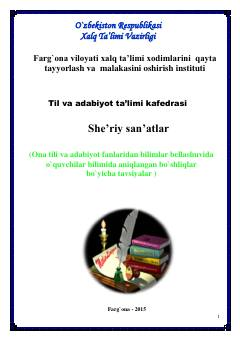

SSShe'riy san'atlar va badiiy tasvir vositalari bo'yicha o'quv qo'llanma.
Ushbu tavsiyanoma ona tili va adabiyot fanlaridan bilimlar bellashuviga tayyorgarlik ko'rayotgan o'quvchilar uchun mo'ljallangan. Unda badiiy tasvir vositalari va she'riy san'atlarning nazariy asoslari misollar bilan tushuntirilgan.